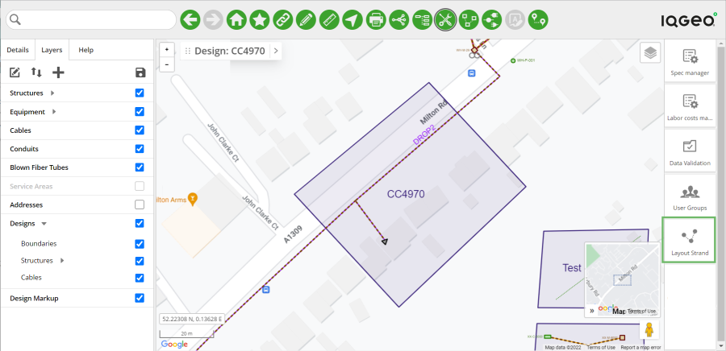
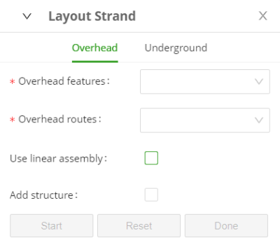
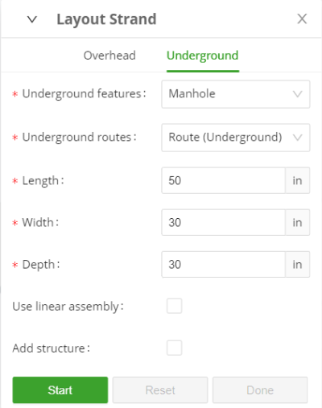
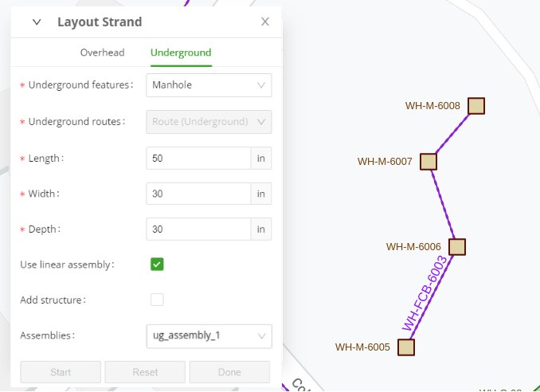

Creating overhead and underground routes
The Layout Strand feature provides an easy way to create overhead and / or underground routes. You simply click and drop points on the map to indicate which path the route should follow. Those points can be either plain vertices that determine the direction or they can be structures that have to be placed at certain locations on the route.
The route is automatically generated between the points you place.
-
Click the Tools Palette button on the toolbar at the top of the page.
The associated tools appear on the right side of the map.

Figure: Tools Palette > Layout Strand icon
-
Click the Layout Strand icon.
The Strand Layout dialog is then displayed.
-
Select the available features and routes for both overhead and underground.
These are set in the Strand Layout settings configuration (see the Installation and Configuration Guide).Overhead

Figure: Layout Strand dialog - Overhead tab
-
Select or enter the following details:
-
Overhead features - The physical features such as a Pole or Building.
-
Overhead routes - The type of route the feature is to take.
-
Use linear assembly - Enable the check box if you want to add access to any linear assemblies that have been created and then select the linear assembly required from the drop down list.
The route is greyed out and cannot be selected if you are using a linear assembly.-
Add Structure - Enable this check box while drawing a route, every time you want to add a structure instead of a vertex on the map, at the location where you are about to click.
This option is equivalent to holding the [Ctrl] key (Windows) or the [Cmd] key (Mac) while clicking a location on the map. It is primarily intended for users of the software on touch-screen devices, where the [Ctrl] key is absent.
Fields that appear in the tool come from mywcom.strandLayout configuration. See the Installation and Configuration Guide.Underground

Figure: Layout Strand dialog - Underground tab
-
Select or enter the following details:
-
Underground features - The physical features such as a Manhole.
-
Underground routes - The type of route the feature is to take.
-
Use linear assembly - Enable the check box if you want to add access to any linear assemblies that have been created and then select the linear assembly required from the drop down list.
The route is greyed out and cannot be selected if you are using a linear assembly.-
Add Structure - Enable this check box while drawing a route, every time you want to add a structure instead of a vertex, at the location on the map where you are about to click. This option is equivalent to holding the [Ctrl] key (Windows) or the [Cmd] key (Mac) while clicking a location on the map. It is primarily intended for users of the software on touch-screen devices, where the [Ctrl] key is absent.
Fields that appear in the tool come from mywcom.strandLayout configuration. See the Installation and Configuration Guide. -
Once you have selected all the features / linear assemblies required, the Start button on the dialog is enabled.
The Start button is shown on both the Overhead and Underground tabs. When you click the Start button, you will be adding the feature / linear assembly shown on the corresponding tab.
-
-
Click the Start button and move the cursor to the position on the map where you want to start to place the feature / linear assembly.
-
Click the left mouse button to place the feature / linear assembly on the map.
Fields and tab switching are all disabled while in “placing mode”.
-
Click the left mouse button to place the feature / linear assembly on the map.
-
If you place a point that is a plain vertex of the path you are drawing, it is shown as a white square; if you place a point while the Add structure option is active, it is presented as a white square with a red circle around it.
-
If you click a point of the path with the Add structure option active in a location where a structure already exists, no new structure will be placed on top of that. The route will connect to that existing structure.
-
In the same way, if you move a point subsequently, that presents a structure, and place it on top of a point that already holds a structure, the structure of that former point will be taken out and vice versa.
To ensure that this feature behaves as expected, it is important to place the points with necessary precision. If a newly placed point does not exactly coincide with the point where a structure is already present, a new structure can still be placed on top of the existing one.You can click the Reset button on the dialog if you have placed the feature / linear assembly incorrectly. This enables you to place it in the correct location. You can also use the functions from the right-mouse context menu to make adjustments while you are drawing.
Linear assembly placing is indicated as shown in the following screen shot:

Figure: Linear assembly placing
-
-
Click the Done button on the dialog , once you have placed the feature / linear assembly in the required location. This adds the features, linear assemblies and routes to the database.
You can add further features /linear assemblies by clicking the Start button on the dialog again and placing it as described above.